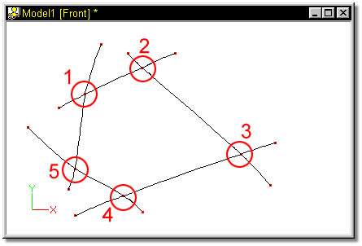
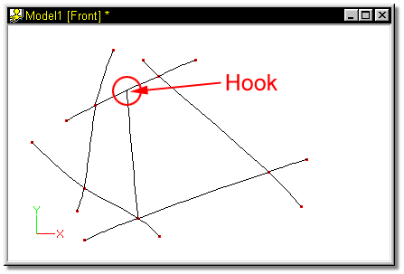
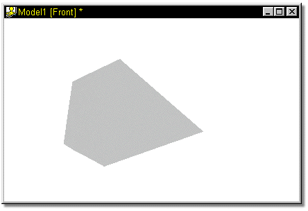

Modeling with patches takes talent, either latent or learned, but the results
are worth it. Patch models are elegant, with their low density and easy
manipulation. For the most part, patch modeling is simple and straight forward: you
build pieces and start attaching them together, but you need to keep a few
rules in mind. Creasing occurs between two patches whose junction is ambiguous,
meaning the renderer could not tell how to smooth between them. Normally you can
intervene to indicate to the renderer what to do. 3-point patches are
especially prone to creasing, so use them sparingly.
Modeling with patches takes talent, either latent or learned, but the results
are worth it. Patch models are elegant, with their low density and easy
manipulation. For the most part, patch modeling is simple and straight forward: you
build pieces and start attaching them together, but you need to keep a few
rules in mind. Creasing occurs between two patches whose junction is ambiguous,
meaning the renderer could not tell how to smooth between them. Normally you can
intervene to indicate to the renderer what to do. 3-point patches are
especially prone to creasing, so use them sparingly.
Even 4-point patches will crease under the wrong circumstances. Creasing normally occurs when the artist is trying to reduce geometry but retain legal patches. Trying to reduce lateral splines from a region with more geometry by making 3-point patches will almost always crease.
Reducing geometry is very common: consider how complex a hand is as compared to a wrist; or how much more complex a face is as compared to the side of a head. Because it is so common, a special facility, called “hooks”, allows you to butt a dead-end spline against a legal 4-point patch without turning the 4-point patch into an illegal 5-point patch. A hook reduces geometry without creasing.

In modeling an object, assume that the wireframe was worked down to a final opening, caused by a five point patch.

Five Point Patch
To correct this hole, a spline can be added to the lower control point, and hooked into the middle of the upper spline:

The control point that will form a hook is attached to the center of a spline just as it would be attached to another control point. Hold the control point to be hooked over the center of a spline, and with the left mouse button down, click the right mouse button.
With the hook in place, the hole will render as follows:

To remove a hook, group it with one of the grouping tools, and press the Delete key.
Since one of the goals of real-time modeling is to keep the number of patches at a minimum, hooks are ideal for eliminating redundant splines that are present for no other reason than to reduce creasing.